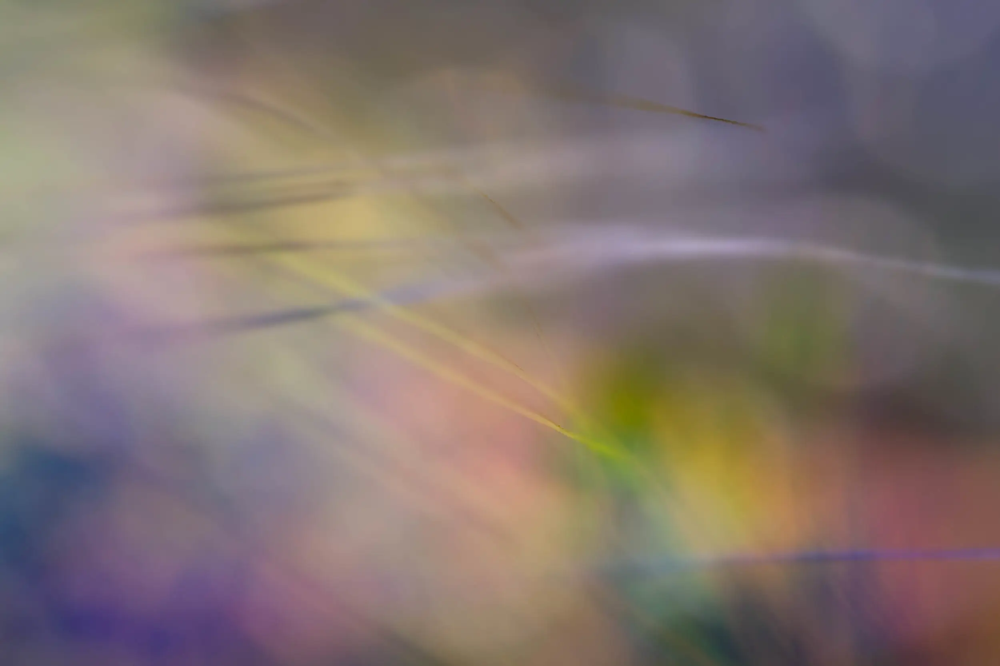

Last week’s On Landscape Magazine published some of my Abstract Grasses in its Subscribers 4x4 section.
Their 4x4 feature is a set of four mini portfolios from their subscribers, each consisting of four images related in some way.

I also loved Stuart Westmore’s Roebuck Bay tides, abstract seascapes in the same section.
Aerial views such as these, and those shot by masters like Hans Strand, alter your perspective of the landscape more than almost any other part of the canon. Of course heading up in a plane is an expensive old business, but well worth it from the work we see.
| « next |